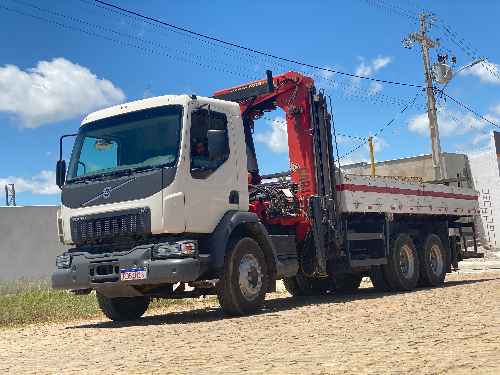
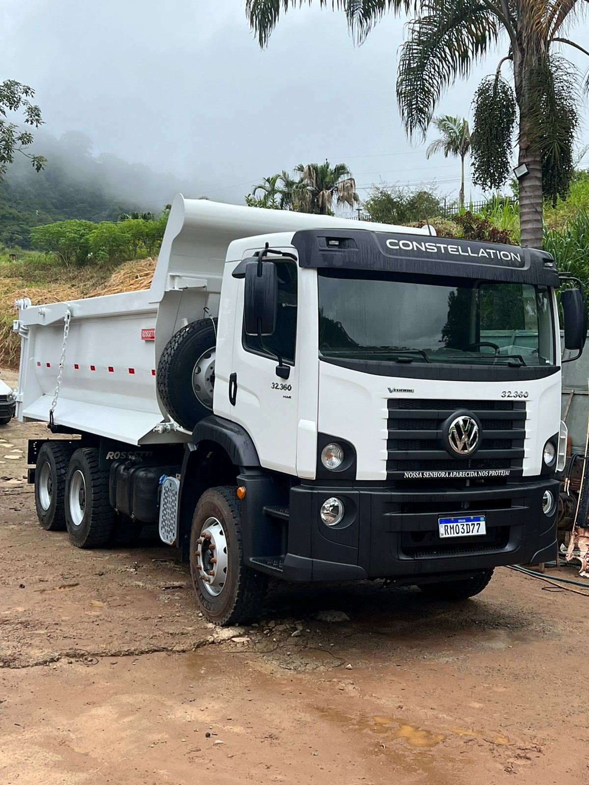

A bomba lança de concreto da Top Transportes Ltda. é um equipamento essencial para projetos de grande escala, como a construção de fundações de aerogeradores. Ela permite o bombeamento eficiente e preciso de concreto em longas distâncias e alturas, garantindo a distribuição uniforme do material na base da estrutura. Ideal para acelerar o processo de construção e assegurar a qualidade da obra, a bomba lança é operada por uma equipe experiente, proporcionando uma aplicação rápida e confiável do concreto, fundamental para a durabilidade e resistência da fundação.
O caminhão Munck da Top Transportes Ltda. é uma solução versátil e eficiente para o transporte e içamento de cargas pesadas em diversas situações. Equipado com um guindaste articulado e um sistema hidráulico de alta capacidade, o Munck garante precisão e segurança nas operações de carga e descarga, otimizando o tempo e os recursos de seus projetos. Sua flexibilidade e capacidade de movimentação em terrenos desafiadores fazem do Munck um equipamento ideal para uma ampla gama de aplicações, desde a construção civil até a indústria e o setor de energia.
O caminhão caçamba da Top Transportes Ltda. é um equipamento robusto e confiável, ideal para o transporte de terra, areia, brita e outros materiais de construção. Com capacidade de carga elevada e sistema de descarregamento rápido e eficiente, a caçamba garante agilidade e praticidade nas operações de transporte, contribuindo para o andamento contínuo e sem interrupções de suas obras. A Top Transportes Ltda. também oferece serviços de revisão e conserto de seus caminhões, assegurando que seus equipamentos estejam sempre em ótimo estado para realizar qualquer tarefa com segurança e eficiência, independentemente do terreno.
